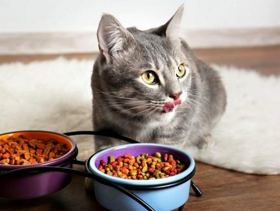

SOBRE NOSOTROS
Había una vez una amante de los gatos llamada Belen. Desde pequeña, siempre había sentido una conexión especial con estos animales tan misteriosos y fascinantes. Pasaba horas jugando con su gato, aprendiendo sobre su comportamiento y cuidándolo como si fuera su mejor amigo. Un día, mientras navegaba por internet buscando nuevos juguetes para su gato, se dio cuenta de que no existía una tienda en línea que ofreciera productos exclusivamente diseñados para satisfacer las necesidades de estos adorables felinos. Belen sabía que muchos otros amantes de los gatos estarían interesados en encontrar un lugar donde pudieran obtener todo lo necesario para consentir a sus mascotas. Decidió tomar acción y crear ella misma esa tienda virtual tan necesaria. Después de investigar sobre diseño web, marketing digital y gestión del comercio electrónico, finalmente lanzó "MichiStore". Esta página web era el lugar perfecto para todos aquellos apasionados por los gatos que buscaban productos exclusivos y de alta calidad para sus queridos felinos. En MichiStore se podían encontrar desde camas cómodas hasta rascadores divertidos, pasando por collares elegantes e incluso comida gourmet especialmente diseñada para satisfacer el paladar exigente de los mininos más selectivos. Además, también incluía una sección dedicada a consejos prácticos sobre cuidado felino, donde Michelle compartía sus conocimientos y experiencia con la comunidad catlover. La noticia del lanzamiento de MichiStore rápidamente se expandió entre la comunidad amante de los gatos a través de las redes sociales y foros especializados. Los comentarios positivos no dejaban de llegar: "¡Finalmente encontré el lugar perfecto para consentir a mi gato!", "Los productos son increíbles", "Gracias a MichiStore mi minino está más feliz que nunca". Michelle estaba emocionada al ver cómo su sueño se convertía en realidad. No solo estaba ayudando a otros amantes de los gatos a encontrar lo mejor para sus mascotas, sino que también tenía la oportunidad única de compartir experiencias e historias divertidas con personas afines. Con el tiempo, MichiStore continuó creciendo exitosamente gracias al empeño y dedicación constante tanto en la selección cuidadosa del catálogo como en brindar un excelente servicio al cliente. La marca ganó reconocimiento nacional e internacional como referente en productos premium para gatos. La creación de MichiStore fue un logro significativo tanto personal como profesionalmente para belen. Haber convertido su amor por los gatos en un negocio exitoso le demostró que perseguir sus sueños valió la pena y le permitió ayudar a miles personas alrededor del mundo a consentir adecuadamente a sus adorables compañeros peludos gracias al completo catálogo ofrecido por MichiStore.
La fecha de creación de la página MichiStore fue el 1 de julio de 2015. Belen trabajó principalmente en solitario para crear y diseñar la tienda en línea, pero contó con el apoyo y asesoramiento de algunos amigos cercanos que tenían experiencia en diseño web y marketing digital. Juntos, colaboraron para hacer realidad su visión y lanzar MichiStore al mundo.